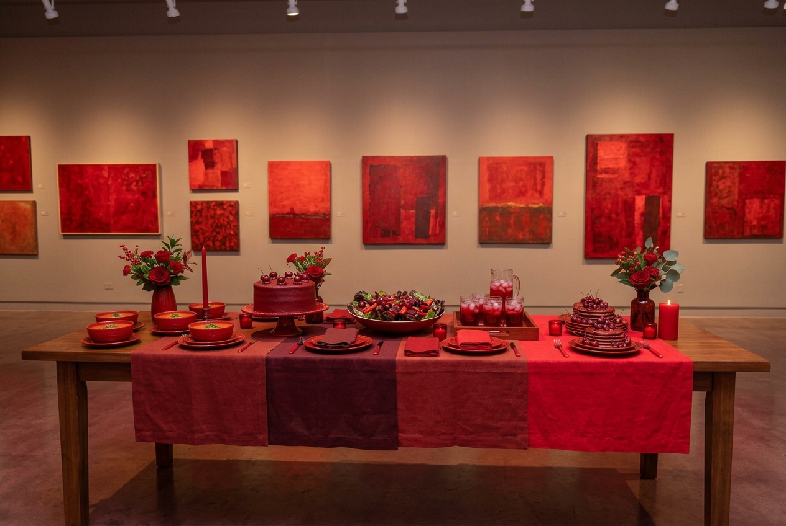
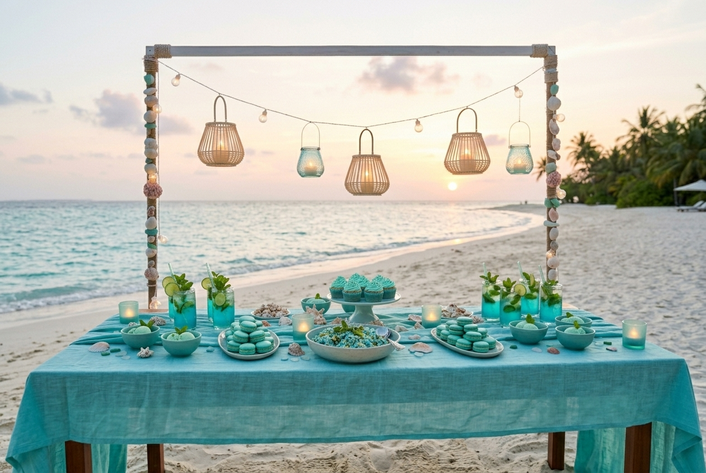
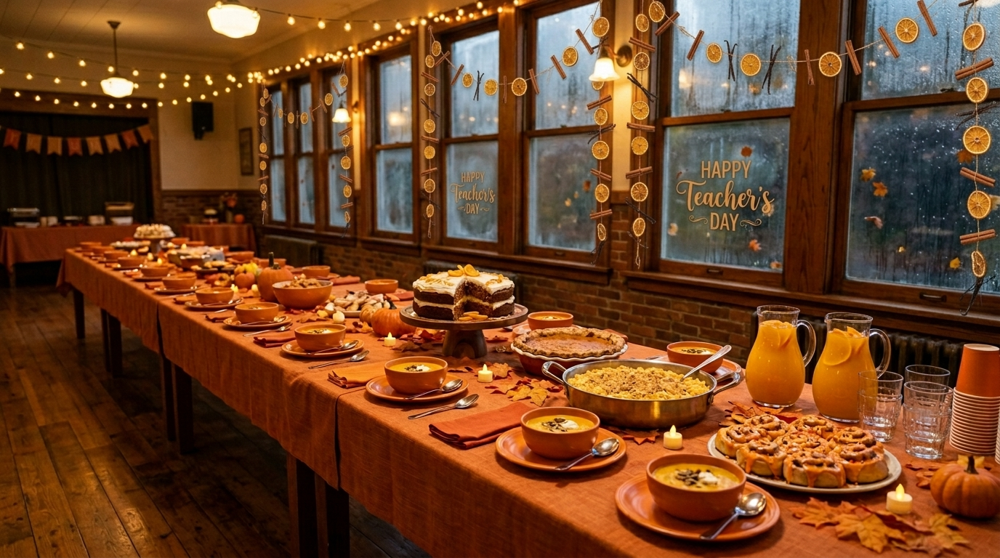
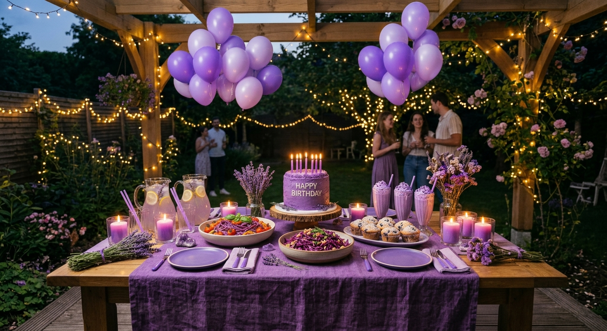

Our Latest Events
Shades of red

Shades of Red was catered for a gallery opening where every painting on the walls was red.
The host wanted the buffet to feel like part of the exhibit, so we arranged the table like a color gradient
from earthy red tones to bright ones.
- Red Velvet cake
- Tomato soup
- Red salad
- Cherry juice
- Cherry jam pancakes
Aquamarine Summer

We catered a summer party on a private beach for a group of students who had just finished their exams.
The long table stood on the sand, all in aquamarine, with glass cups, shells, and lanterns.
When the sun went down, the music started, and nobody wanted to go home.
- Blue Mojito
- Mint ice cream
- Turquoise macarons
- Blue cupcakes
- Blue rice
Pumpkin Hallway

It was Teachers’ Day, and the whole school hall smelled like cinnamon.
Orange cloths covered the wooden tables, and the windows were foggy from the rain outside.
Students lined up with hot pumpkin soup, mac and cheese, and a thank you for every teacher.
- Carrot cake
- Pumpkin soup
- Sweet potato pie
- Mac and cheese
- Cinnamon rolls
- Orange juice
Violet Birthday

It was a birthday, and everything on the table was violet.
Lilac balloons floated over one long table, and fairy lights glowed in the dark.
Friends sang, ate cake, and stayed until the candles burned down.
- Blueberry muffins
- Ube birthday cake
- Lavender lemonade
- Purple cabbage salad
- Purple milkshake